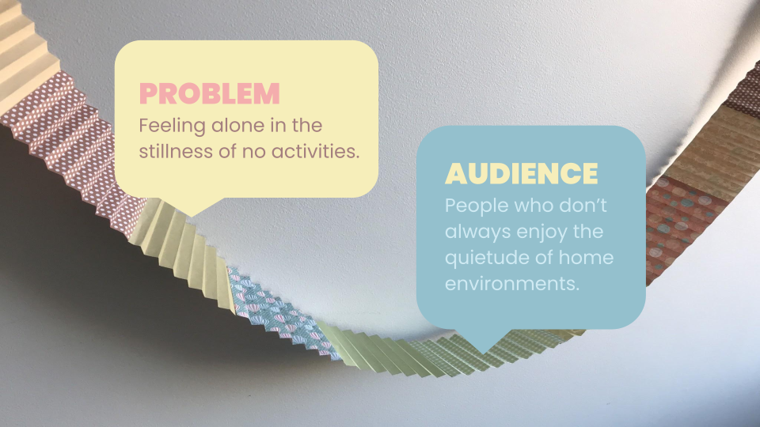
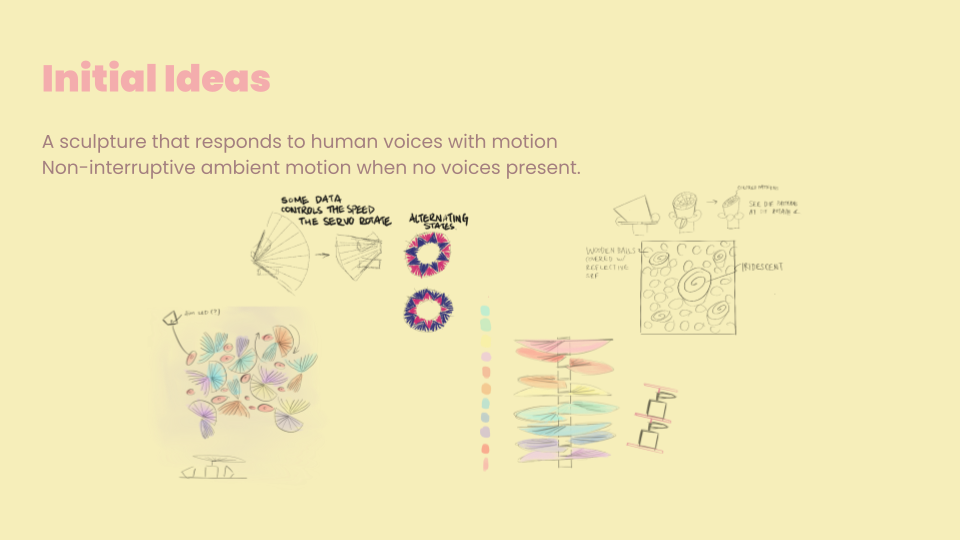
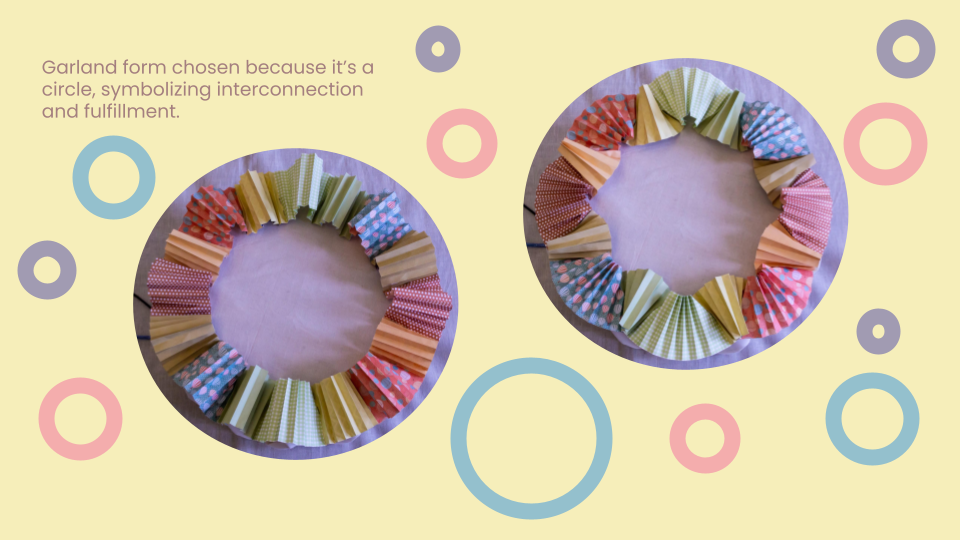
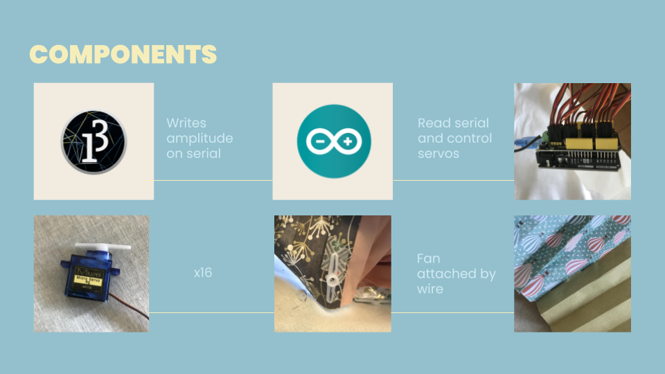
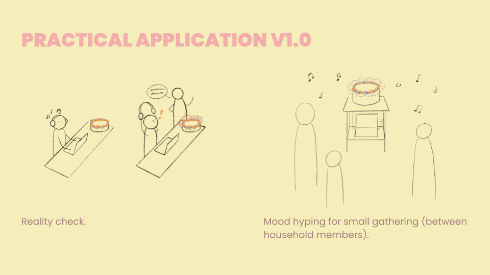
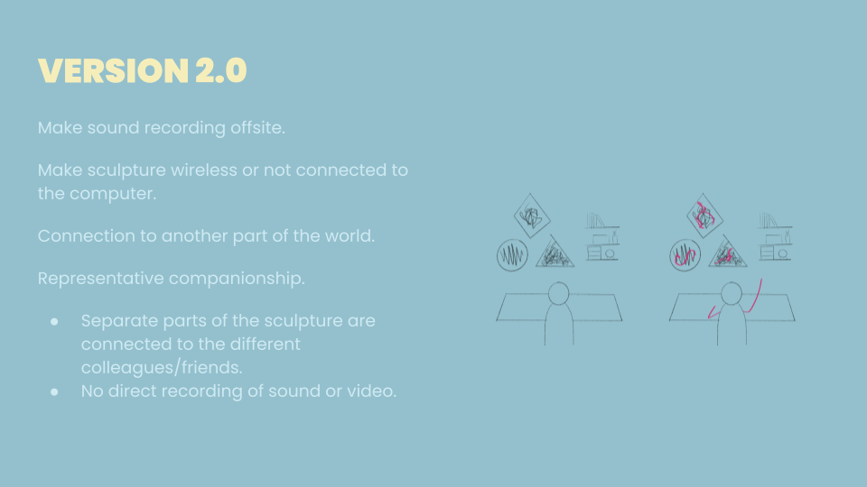

Sonic Frosting
There are many ways to connect with people, in-person or through a device. There are also many different kinds of companionships. In this project, I created a sculpture to lessen the loneliness felt in the stillness of no activities. The animal-like behavior makes the sculpture feel almost like a living companion, and this companion moves unobtrusively when no human voices are present. When human voices are present, the sculpture displays a more exciting behavior in response. This way, the presence of others is abstracted through sound and movement. The intended audience would be people who want some constant motion in their home, so that the environment always feels lively.
The current version could be the prototype of a wireless, two part system, where the sound source comes from a public space and the sculpture actuation happens locally. In this future version, the device would be able to provide an ambient presence of other humans in a representational way, to avoid creating a surveillance situation.
     